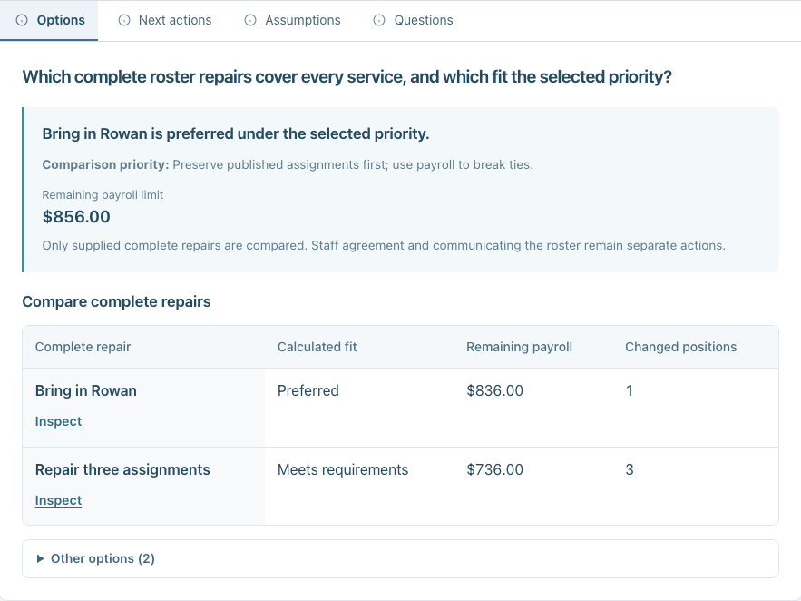
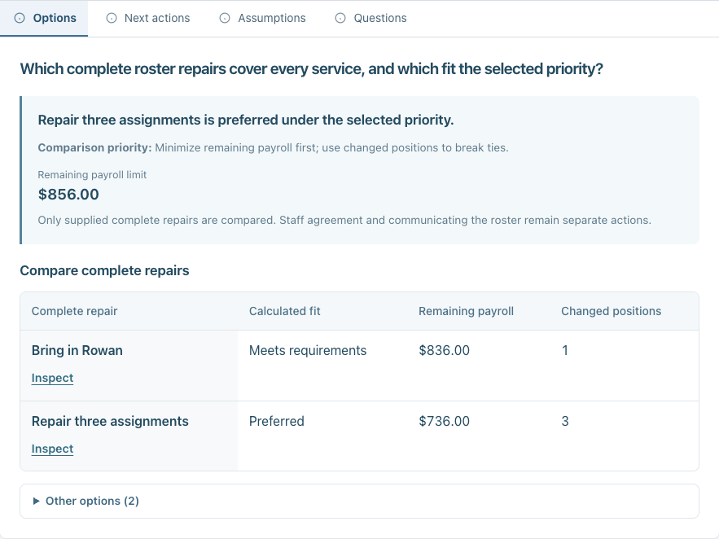

Elena has a Saturday dinner shift to cover and a roster her employees have already planned around. Two complete repairs meet the restaurant’s recorded requirements. One costs $100 less. The other changes fewer published positions. Choosing the cheaper repair saves money but asks more of the team; choosing the smaller change needs an explanation for the extra expense.
A report that calls either repair “best” without explaining its priority hides part of Elena’s decision. A useful report must establish which options are supported, what comparison it applies and how that comparison produces the preference. Elena can then explain her choice—and recognize what the calculation has left for her to decide.
Give requirements and priorities different jobs
A mandatory requirement determines whether an option qualifies for the comparison. A preference orders the options that qualify. These two judgments need different support.
A restaurant repair must cover every required position with a qualified, available employee, respect the declared rest and hours conditions, avoid overlapping assignments and fit the expense boundary. Paying less cannot compensate for leaving Sunday without a cook. Favoring the published roster cannot make an unavailable employee available.
Once two complete repairs meet those conditions, the requirements alone may leave the choice open. A manager can then apply an explicit priority, or consider the passing options without a calculated ranking. Can We Complete the Commitment? explains what the feasibility finding establishes before that comparison begins.
Keep the facts fixed. Change the declared priority.
In this fictional restaurant case, Nora cannot work her published Saturday cooking assignment. Bringing in Rowan covers that position while retaining the other eight positions. The coordinated repair instead moves Theo into Saturday cooking, moves Ben into Sunday cooking and adds Ava to Sunday serving. Each candidate represents the complete remaining Friday–Sunday roster, including the work left unchanged.
| Complete repair | Remaining payroll | Additional expense | Changed positions |
|---|---|---|---|
| Bring in Rowan | $836 | $180 | 1 |
| Repair three assignments | $736 | $80 | 3 |
Additional expense is measured against $656 of retained remaining payroll, after Nora’s unpaid cancelled shift is removed. A changed position means a published service-and-role position assigned to a different person. It does not measure employee inconvenience or fairness.
Now apply two explicit policies to those same passing repairs:
- Preserve published assignments first: minimize changed positions, then use remaining payroll to break ties. Bringing in Rowan is preferred: one position changes rather than three.
- Minimize remaining payroll first: minimize remaining payroll, then use changed positions to break ties. The coordinated repair is preferred: $736 rather than $836.
These are ordered priorities. They introduce no exchange rate between a dollar and a changed position. Both policies are precise enough to apply consistently, but neither establishes what Elena ought to value in every situation. The complete restaurant story follows how she justifies stability first for an already-published week.
Ask what the word “preferred” must establish
Before trusting a preferred label, a reader needs more than a score or the first row of a table. The report should make the following basis identifiable.
| Required basis | What the reader should be able to identify |
|---|---|
| Eligible alternatives | The complete candidates that meet the mandatory conditions. An attractive failed candidate stays outside the preference comparison. |
| Applicable policy | The criteria, their direction and their order or other declared method of comparison. |
| Comparable values | What each measure counts, its units and its scope. Here, remaining payroll and changed positions refer to the same remaining roster. |
| Evaluation coverage | Whether the evaluation supports this comparison. The restaurant result covers four supplied repairs, rather than every possible roster. |
| Preference outcome | Which eligible candidates the policy favors, including genuine ties where the declared comparison leaves them tied. |
| Current basis | Which facts and policy produced the finding, and whether changed inputs require recalculation. |
“Preferred among the supplied repairs under this policy” is a useful conclusion. “The best possible restaurant roster” would require a much broader claim about the alternatives examined and the objectives modeled. A report should make the supported scope easy to retain when someone shares its recommendation.
Distinguish unranked, tied and unresolved
Several passing options do not automatically imply a tie. A tie requires an applicable comparison that leaves those options equally preferred. Without a ranking policy, the report can present passing options while leaving preference unestablished.
| Situation | Supported reading |
|---|---|
| Compare without ranking | Passing options are available. No calculated preference is declared. |
| Genuine preferred tie | The declared policy was applied with sufficient support and retains more than one preferred option. Keep those ties visible. |
| Preference unresolved | Missing values, an incomplete comparison or another unresolved condition prevents establishing the preference. A known feasible option can still remain useful. |
| Inputs changed | The earlier preference no longer establishes the current answer. Recalculate the changed basis before relying on it. |
The restaurant example demonstrates the first state and two unique policy outcomes. Its two passing repairs have different payroll and change counts; they do not demonstrate a tied calculation. The tie distinction is a requirement for interpreting preference reports more generally.
A financial hurdle does not establish a profit ranking
Consider Alex’s street-team deployment decision. Five qualified staff are available and at least four must remain inside. Holding the team or sending one person meets the recorded operating requirements. Sending two leaves insufficient floor coverage.
The one-person deployment costs $200. If each genuinely additional guest contributes $40 and no separate loss on existing customers is recorded, five additional guests cover the expense; six exceed it. That calculation supplies a conditional response hurdle. It does not establish that five or six guests will attend.
Choosing the deployment with the lowest hurdle would silently introduce a new preference policy. Calling it the most profitable would also require justified information about incremental response, contribution and any other relevant effects. A workable deployment and an affordable hurdle leave Alex with a management decision about uncertain response.
The reusable structure is bounded: identify complete options, establish their eligibility and apply a justified comparison when one exists. Restaurant assignment counts and promotion guest thresholds retain different meanings. A shared layout does not make one measure a substitute for the other. From Arrangements to Assessments explains why the assessment question determines what a finding can establish.
Test the report with one controlled change
The restaurant comparison gives a simple test: hold employee availability, qualifications, the four supplied repairs and the $856 boundary fixed. Change only the priority from preserving assignments first to minimizing payroll first.
The preferred repair changes from Rowan to the coordinated repair. The passing set and each repair’s payroll and changed-position count stay the same. This isolates the priority’s contribution to the recommendation.
Now distinguish a changed operating fact. If Rowan can stay only until 8 p.m. while the required shift still ends at 10 p.m., the relief repair fails its availability requirement. No priority can restore its eligibility. Compare the availability scenarios to see that separate change.
Ask a reader to explain the preferred label without relying on its color or position. Can they name the policy, identify the decisive values, show that mandatory requirements remain satisfied, and state what would require reassessment? Can they distinguish a policy change from a failed requirement? Those are observable tests of whether the report supports judgment.
Inspect the distinction in the working application
The current Repair a published restaurant roster workflow makes these comparisons in the same analysis. The native Decision summaries below use the same full-availability facts. Only the comparison priority changes; the still-current feasibility calculation is retained.
Preserve published assignments first
Bring in Rowan is preferred. Elena preserves the other published assignments. The remaining payroll is $836, within the same $856 limit.


Minimize remaining payroll first
Repair three assignments is preferred. The coordinated changes retain the required service coverage at $736 remaining payroll. The additional expense is $100 lower than bringing in Rowan.


- Open the roster example and keep Rowan available for the complete 6–10 p.m. assignment. Calculate with Compare without ranking to inspect the passing repairs.
- Under Inputs → Repair decision → Comparison priority, choose Preserve published assignments first, apply the inputs and calculate as offered. Identify the criterion that favors Rowan.
- Change only the priority to Minimize remaining payroll first, apply it and calculate as offered. Compare the current Decision summary with the previous one: the preference changes while the current feasibility finding remains available.
- Use Supporting reports → Complete roster and select a Service position to compare its assignment across the supplied repairs. The Decision process connects findings with available responses; inspecting an action does not carry it out.
For this published week Elena chooses stability first. She can justify paying $100 more to avoid two additional changed positions while remaining within the expense boundary. She still needs Rowan’s agreement and must communicate the revised roster. The preference supports her proposal; it does not publish the roster or establish that employees have accepted it.